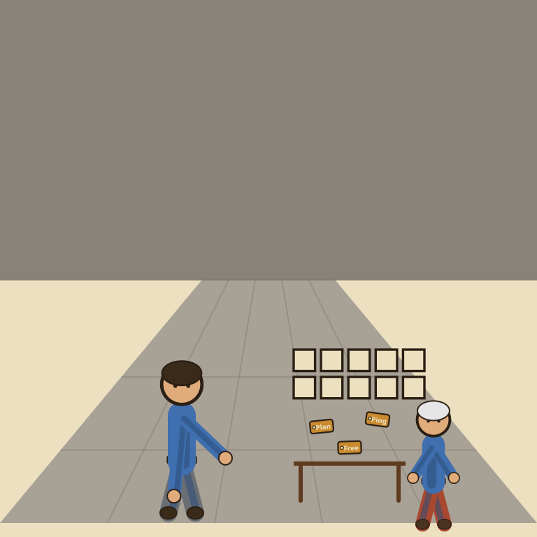

Attio

Every ledger promises it remembers everything about everyone. This one just admits it charges by the memory.
Attio is a flexible, data-first CRM with AI research and enrichment built into every plan, including a genuinely usable free tier: 3 seats, 50,000 records, and real AI features metered by a monthly credit pool instead of blocked outright. Plus, at $29/seat/month billed annually, removes the seat cap, raises record capacity to 250,000, and adds more custom objects. Pro, at $69/seat/month annually, removes those limits entirely. The verdict: one of the few CRMs where the free plan is more than a stripped-down demo, worth a serious look for anyone who has outgrown a spreadsheet but isn't ready for a bigger CRM's price tag.
Attio's pitch is that AI shouldn't be a locked door behind the expensive tier. It's a more honest pitch than most CRMs make, it just means the free plan quietly turns into a two-wallet budgeting exercise once you actually start using the AI features it's so proud of including.
- Value for price8/10
- Capability7.5/10
- Ease of use7/10
- Trial safety8.5/10
Attio differs from most CRMs by building around a flexible, relational data model instead of rigid contact and deal objects: you define what a "record" is (a company, a deal, a custom object entirely), and the AI features work across whatever structure you build rather than a fixed template. That flexibility is also why the learning curve is a notch higher than a plug-and-play CRM, you're setting up a small data model, not just importing a spreadsheet.
Pricing breakdown
- Free ($0): up to 3 seats, 50,000 records, 3 custom objects, up to 200 email sends/user/month, real-time contact sync, AI enrichment and Ask Attio metered by credits
- Plus ($29/seat/mo billed annually, $36/seat/mo billed monthly): no seat cap, up to 10 seats, 250,000 records, 5 custom objects, larger AI credit pools
- Pro ($69/seat/mo billed annually, $86/seat/mo billed monthly): no seat or object limits, largest AI credit pools, advanced automation and reporting
- Extra workspace AI credits: an additional 10,000 workspace credits costs $120/mo billed annually ($150/mo billed monthly) on top of any plan
Where it falls short
The AI credit system is genuinely two separate wallets, seat credits for personal use and workspace credits for shared automation, and it takes a few weeks of real use to understand which actions draw from which pool before you can predict your own usage. The flexible object-based model is also a double-edged sword: it's more powerful than a fixed CRM template, but it means there's real setup work before Attio feels like "your" CRM rather than a blank canvas. And once a small team outgrows 3 seats, the jump to Plus is a real per-seat cost that adds up the same way any CRM's does.
Pros
- Free plan is genuinely usable, not a stripped demo, with real AI enrichment included
- Flexible data model adapts to businesses that don't fit a standard contact/deal CRM template
- Credit-based AI metering means light users aren't paying for capacity they don't use
Cons
- Two separate AI credit pools (seat and workspace) take real time to understand
- Flexible object model means more setup work than a plug-and-play CRM
- Free plan's 3-seat cap means any growing team hits the Plus price wall quickly
Common questions
Does Attio's free plan actually include AI features?
Yes. Unlike most CRMs that gate AI behind the priciest tier, Attio's free plan includes data enrichment and Ask Attio, its built-in AI search and record assistant, metered by a monthly credit pool rather than blocked outright.
What are Attio's AI credits and how do they work?
Attio meters AI usage through two refilling credit pools: seat credits, a personal budget per user for things like Ask Attio queries and email drafts, and workspace credits, a shared pool for automations, bulk enrichment, and AI record attributes. Seat credits are used first, and workspace credits cover the overflow.
What do I get for the extra $29 a month on Plus?
Plus removes the 3-seat cap, raises record capacity from 50,000 to 250,000, and adds more custom objects and monthly email sends per user. Pro, at $69/seat/month annually, removes the seat and object limits entirely.